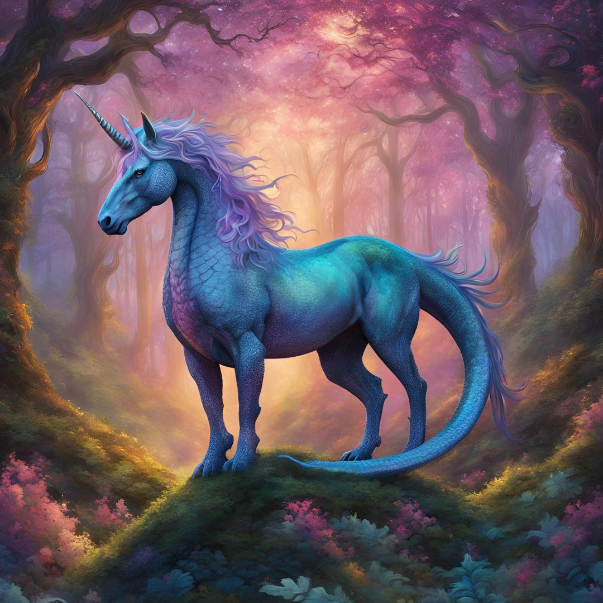

Lúmi el dracocornio

Lúmi es un adorable dracocornio, una mezcla entre un dragón y un unicornio. Tiene un cuerpo esbelto cubierto de escamas iridiscentes que brillan con diferentes colores según la luz. Su cabeza es similar a la de un dragón, pero con un cuerno dorado en la frente, que emite una suave luz mágica. Sus alas son grandes y brillantes, con un diseño de galaxias que las hace parecer un cielo estrellado.
Lúmi es juguetón y curioso, siempre listo para explorar nuevos lugares. Le encanta hacer amigos y es muy leal a quienes lo rodean. A pesar de su apariencia imponente, es muy tierno y disfruta de acurrucarse. Tiene un sentido del humor único y siempre encuentra la manera de hacer reír a los demás.
Tabla de presentación
| Edad |
Raza |
Color |
Personalidad |
Alimento favorito |
| 1M |
Dracocornio |
Azul |
Aventurero |
Nubes de azúcar |
Top 5 actividades favoritas de Lúmi
-
Exploración de bosques encantados: Lúmi disfruta volar por los bosques, descubriendo nuevos senderos y lugares mágicos llenos de flores y criaturas amistosas.
-
Juegos con amigos: Le encanta jugar a las escondidas y a la búsqueda del tesoro con sus amigos, fomentando la amistad y la diversión.
-
Cuentacuentos: Lúmi comparte historias mágicas y aventuras con los niños, inspirando su imaginación y creatividad.
-
Cuidado de la naturaleza: Ayuda a cuidar el medio ambiente, plantando árboles y recolectando basura para mantener su hogar limpio y hermoso.
-
Días de relax en el lago: Lúmi pasa tiempo nadando y jugando en el lago, disfrutando de los días soleados y relajándose bajo el sol.
Top 2 comidas favoritas de Lúmi
-
Nubes de azúcar: Un dulce especial que le encanta, que le da energía para jugar y volar.
-
Galletas de miel: Deliciosas galletas hechas con miel mágica, perfectas para un snack entre aventuras.